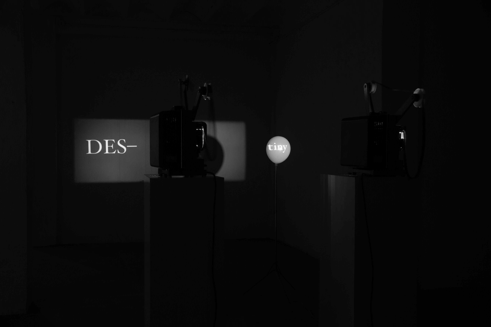
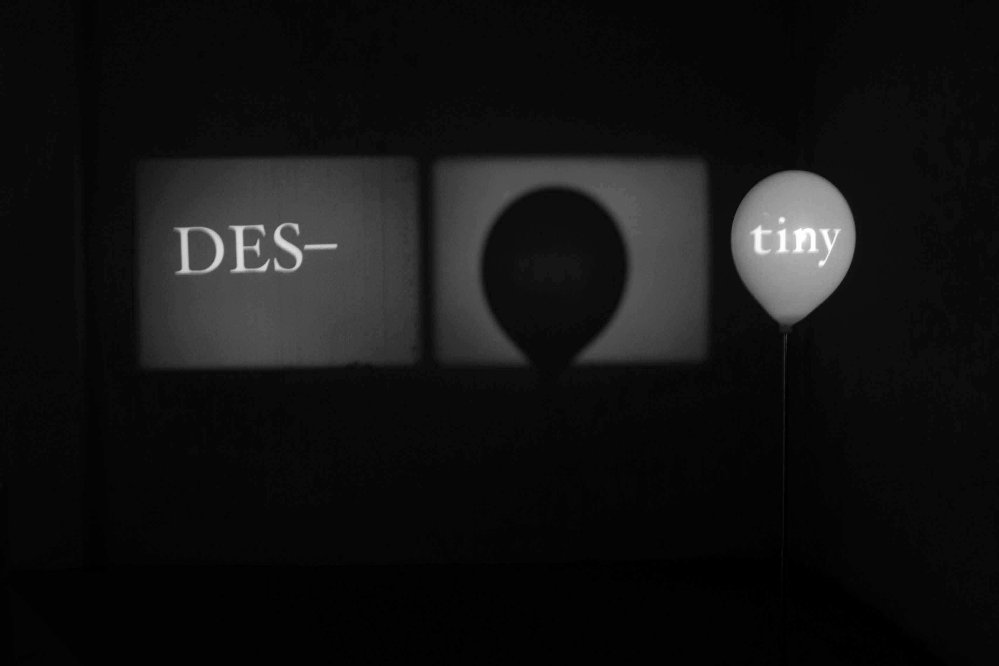

Exhibition view: FUCK THE MARGIN, Le Grand Garage, Cuenca (Spain)


2024
Film installation
Double 16mm projection (B&W negative), custom Arduino-controlled pneumatic system, and white balloon
Variable dimensions
Word composition: David García Casado
Electronics: Hsien-Yu Cheng
DES-tiny is an inquiry into the physical expansion of the filmic image and the linguistic deconstruction of “destiny.” By splitting the word into two distinct projections—the prefix DES- and the adjective tiny—the work explores the tension between fixed cinematic recording and the ephemeral, breathing nature of the sculptural support. The “destiny” of the light beam is intercepted by a volume in constant transformation.
The work employs a dual-projection setup using 16mm negative film, emphasizing the raw, granular materiality of the medium.
→ Digital documentation